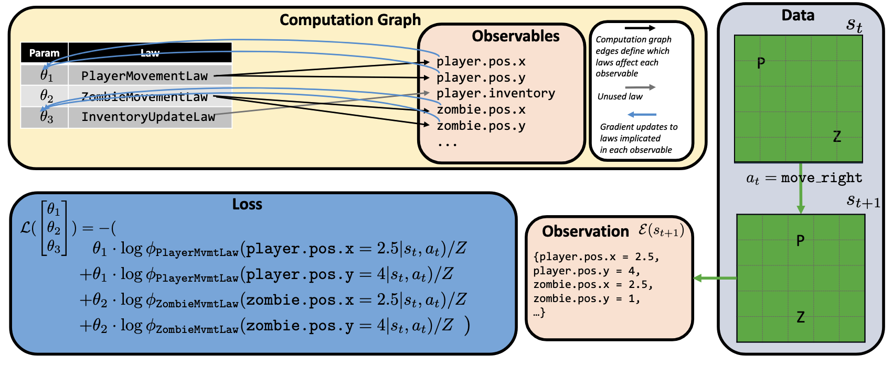
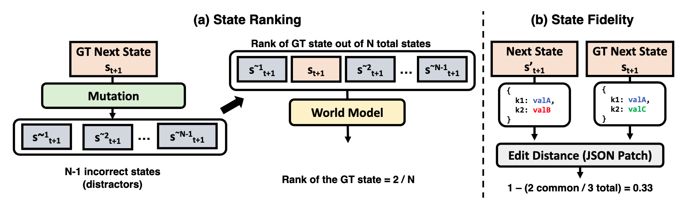
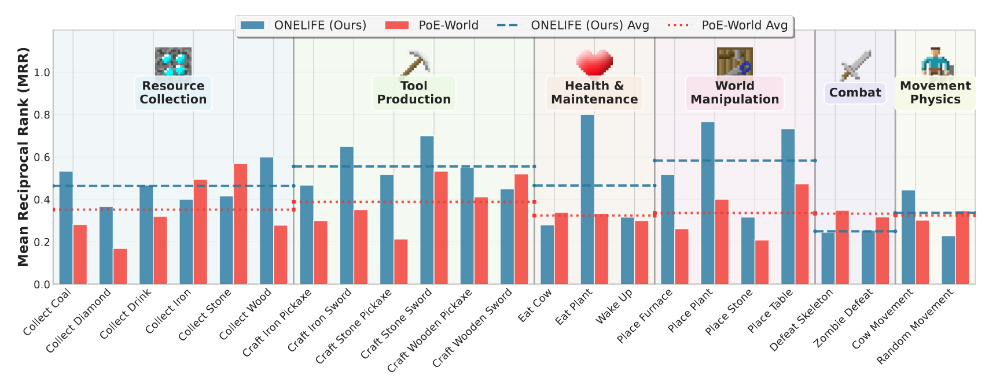
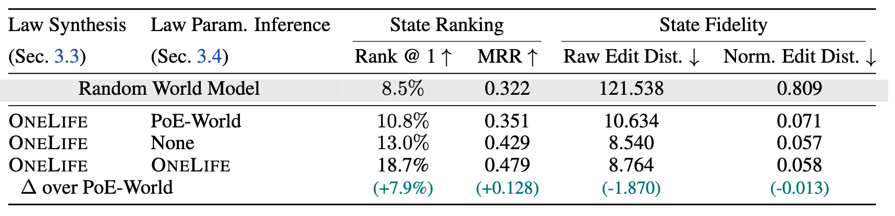
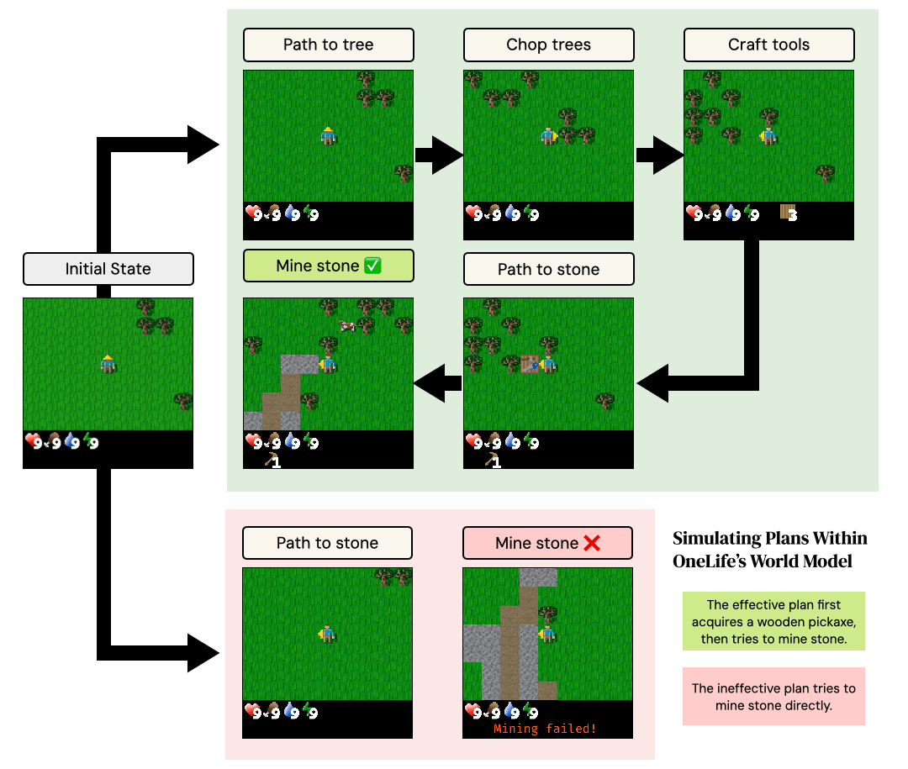
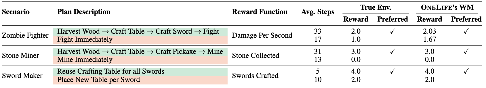

OneLife synthesizes world laws from a single unguided (no environment-specific rewards / goals) episode in a hostile, stochastic environment
OneLife models the world as mixture of laws written in code with a precondition-effect structure, each governing an aspect of the world, and infers parameters for the mixture that best explain the observed dynamics of the world.
The resulting world model (WM) provides a probability distribution over attributes of an object-oriented world state, such as the position of a particular zombie.
OneLife outperforms a strong baseline in modeling 16/23 core game mechanics tested, measured by MRR (Mean Reciprocal Rank) of the true next state (see evaluation) under the WM's likelihood.
See zombie law for a synthesized zombie law.
Abstract
Symbolic world modeling is the task of inferring and representing the transitional
dynamics of an environment as an executable program. Previous research on
symbolic world modeling has focused on largely deterministic environments with
abundant interaction data, simple mechanics, and human-provided guidance. We
address the more realistic and challenging problem of learning a symbolic world
model in a complex, stochastic environment with severe constraints: a limited
interaction budget where the agent has only "one life" to explore a hostile environment and no external guidance in the form of human-provided, environment-specific rewards or goals. We introduce OneLife, a framework that models world
dynamics through conditionally activated programmatic laws within a probabilistic programming framework. Each law operates through a precondition-effect
structure, allowing it to remain silent on irrelevant aspects of the world state and
predict only the attributes it directly governs. This creates a dynamic computation graph that routes both inference and optimization only through relevant laws
for each transition, avoiding the scaling challenges that arise when all laws must
contribute to predictions about a complex, hierarchical state space, and enabling
accurate learning of stochastic dynamics even when most rules are inactive at any
given moment. To evaluate our approach under these demanding constraints, we
introduce a new evaluation protocol that measures (a) state ranking, the ability to
distinguish plausible future states from implausible ones, and (b) state fidelity,
the ability to generate future states that closely resemble reality. We develop
and evaluate our framework on Crafter-OO, our reimplementation of the popular Crafter environment that exposes a structured, object-oriented symbolic state
and a pure transition function that operates on that state alone. OneLife can successfully learn key environment dynamics from minimal, unguided interaction,
outperforming a strong baseline on 16 out of 23 scenarios tested. We also demonstrate the world model's utility for planning, where rollouts simulated within the
world model successfully identify superior strategies in goal-oriented tasks. Our
work establishes a foundation for autonomously constructing programmatic world
models of unknown, complex environments.
How OneLife Works

Illustration of the inference process. The active laws for each observable (defined by \(\mathcal{I}_k(s_t, a)\)) determine the structure of the computation graph, i.e., which laws and their corresponding parameters \(\theta_i\) are related to which observables. This structure in turn informs the parameter updates.
Shown here is a dataset with a single transition instance, in which the player (P) moves right; at the same time, a zombie (Z) independently moves left.
This implicates two laws, PlayerMovementLaw and ZombieMovementLaw, while not implicating the InventoryUpdateLaw.
As a result, the loss computation is only a function of \(\theta_1\) and \(\theta_2\). Note we use \(Z\) here to denote the normalizing factor.
Mixture of programmatic laws (precondition–effect) + observables: We represent dynamics as a mixture of modular laws written in code. Each law activates when its precondition holds and only predicts a subset of state observables (e.g., player.position), creating a sparse, modular interface that scales to complex, object-oriented states.
Unguided exploration with atomic law synthesis: A language-model–driven exploration policy collects a single episode without rewards or goals. A general synthesizer then proposes simple, atomic laws that explain observed transitions (decomposing complex events into minimal attribute changes) to form a broad hypothesis set.
Dynamic routing inference + forward simulation: For each transition, gradients and credit are dynamically routed only through active laws for the relevant observables; we fit the law weights via a weighted product-of-experts objective (optimized with L-BFGS). The learned model supports likelihood scoring and generative rollouts by sampling per-observable predictions and reconstructing the next symbolic state.
Crafter-OO: A Testbed for Symbolic World Modeling
A common design assumption in previous work on symbolic world modeling is that we have access to an object-oriented world state to use as input to the symbolic world model under construction. In practice, this state is only easily accessible for simple environments such as Minigrid or BabyAI. Programmatic access to the state of more complex environments such as Atari games is only possible due to standalone development efforts such as OCAtari which makes the internal object-oriented state of these environments accessible to researchers. The lack of an environment with an exposed, object-oriented state that is more complex than gridworlds or with mechanics more diverse than Atari games has thus far prevented evaluation and development of symbolic world modeling approaches for more complex environments.
To close this gap, we implement Crafter-OO, which emulates the Crafter environment by operating purely on an explicit, object-oriented game state. Additionally, we contribute utilities for programmatically modifying the game state to create evaluation scenarios.
Interactive State Transition Example
Below is a simple example showing how actions transform the object-oriented game state in Crafter-OO. Click the button to see how the state changes when the player takes an action.
Current State
Scroll to see more
Changes (Diff)
Scroll to see more
The state representation captures the complete game world including player attributes (position, health, inventory), entities (cows, zombies, trees), and environmental properties. When an action is taken, multiple aspects of the state can change simultaneously: the player's action and inventory update, entities may move (like the cow and zombie), and environmental objects (like trees) may be removed. The world model must learn to predict these cascading changes from observing transitions.
Evaluation Protocols and Metrics

Two evaluation metric categories. We assess world models through state ranking (ability to distinguish plausible future states from implausible ones using programmatic mutators) and state fidelity (ability to generate states that closely resemble reality using edit distance metrics).
Evaluating world models for stochastic environments requires measuring two key capabilities:
State Ranking
These metrics assess whether the model ranks the true next state higher than distractor states. We create distractors using mutators—programmatic functions that apply semantically meaningful, rule-breaking changes (e.g., allowing crafting without prerequisites).
Rank @ 1 (R@1): Binary metric measuring if the model assigns highest probability to the true state.
Mean Reciprocal Rank (MRR): Averages the reciprocal rank of the correct state: \(\text{MRR} = \frac{1}{N} \sum_{i=1}^{N} \frac{1}{r_i}\)
State Fidelity
These metrics measure the error between predicted and ground truth states:
Raw Edit Distance: Number of atomic JSON Patch operations needed to transform predicted state into ground truth.
Normalized Edit Distance: Raw edit distance divided by total state elements.
Evaluation Framework Implementation on Crafter-OO
Evaluating a world model on random rollouts may not provide sufficient coverage of rare or important events in an environment. To ensure our evaluation is comprehensive, we create evaluation trajectories from a suite of scenarios. Each scenario runs a short, scripted policy from an initial state designed to reliably exercise a specific game mechanic or achieve a particular goal.
Our scenarios cover every achievement in the achievement tree of Crafter-OO/Crafter, ranging from basic actions like collecting wood to complex, multi-step tasks like crafting an iron sword. We generate distractors for each transition in the evaluation dataset using a bank of 8 mutators which each produce a subtle, but illegal transformation of the game state in response to an action—such as causing an incorrect item to be produced when taking a crafting action, or allowing an item to be produced without the correct requirements.

Per-scenario state ranking performance of OneLife (Ours) versus PoE-World, measured by Mean Reciprocal Rank (MRR ↑). Scenarios are grouped by the core game mechanic they test. Horizontal lines show the average MRR across all scenarios in a group for OneLife and PoE-World. OneLife demonstrates a more accurate understanding of the environment's laws, achieving a higher average MRR and outperforming the baseline on the majority of individual scenarios.
Experimental Setup and Results
We conduct a series of experiments to evaluate OneLife. First, we quantitatively assess the model's predictive accuracy using our state ranking and fidelity metrics across a comprehensive suite of scenarios. Second, we test the model's ability to support planning in imagination by performing simulated rollouts of different policies.
Baseline Models
Random World Model: A model that assigns uniform probability to all candidate states. Its performance is equivalent to random guessing and serves as a sanity check.
PoE-World: A state-of-the-art symbolic world model that scaled symbolic world modeling to domains like Atari. Both PoE-World and OneLife represent the transition function as a weighted product of programs. We reimplement this baseline with our exploration policy and law synthesizer.
Results

Performance comparison of world modeling methods on the Crafter-OO environment, averaged over ten trials. We evaluate models on two criteria: state fidelity and state ranking. All methods use the OneLife exploration policy and law synthesizer but differ in their parameter inference method. OneLife shows significant improvements over the PoE-World inference algorithm and OneLife variant without parameter inference. The random baseline is shaded in gray.
Planning with the Learned World Model
To assess the practical utility of the learned world model, we evaluate its effectiveness in a planning context. Our protocol tests the model's ability to distinguish between effective and ineffective plans through forward simulation. For a set of scenarios, we define a reward function and two distinct, programmatic policies (plans) to achieve a goal within the scenario. Each plan is represented as a hierarchical policy (in code) that composes subroutines for navigation, interaction, and crafting.
We execute rollouts of both plans within our learned world model and, separately, within the ground-truth environment. The measure of success is whether the world model's simulation yields the same preference ranking over the two plans as the true environment, based on the final reward. This assesses if the model has captured the causal dynamics necessary for goal-directed reasoning.
Setup
We design three scenarios that test distinct aspects of the environment's mechanics: combat, tool-use and resource consumption. In the Zombie Fighter scenario, an agent with low health must defeat two zombies. The superior plan involves a multi-step process: pathfinding to locate and harvest trees, crafting a table and then a sword, and only then engaging in combat. The alternative is to fight immediately.
The Stone Miner scenario tests the model's understanding of resource collection. The effective plan is to first harvest wood, craft a pickaxe, pathfind to a stone, and then mine. Attempting to mine stone directly is ineffective. Finally, the Sword Maker scenario evaluates knowledge of resource consumption. The goal is to craft multiple swords. The efficient plan places a single crafting table and reuses it, whereas the inefficient plan wastes wood by placing a new table for each sword.
On average, a plan requires approximately 18 steps to execute, with the longest plans taking over 30 steps. Thus, simulating the results of these plans tests the ability of the world model to accurately model the consequences of long sequences of actions upon the world.

Example of plan execution withinOneLife's world model for the "Stone Miner" scenario. The effective plan carries out a multi-step sequence of gathering wood, crafting a wooden pickaxe, and then attempting to mine. The ineffective plan attempts to mine the stone directly. The world learned by OneLife correctly simulates causal game mechanics that cause the effective plan to succeed and the ineffective plan to fail.
Results
Across all three scenarios, our learned world model correctly predicts the more effective plan. The ranking of plans generated by simulating rollouts in OneLife matches the ranking from the ground-truth environment. For instance, in the Zombie Fighter scenario, the model correctly simulates that the multi-step plan of crafting a sword leads to higher Damage Per Second, identifying it as the superior strategy. This demonstrates that OneLife captures a sufficiently accurate causal model of the world to support basic, goal-oriented planning.

Planning results across three scenarios. OneLife correctly identifies the superior plan in each scenario by simulating rollouts and comparing final rewards.
Synthesized World Laws
OneLife synthesizes modular, programmatic laws that capture the dynamics of the environment. Each law implements a precondition-effect structure where the precondition determines when the law should activate, and the effect specifies how the world state changes. Below are examples of laws synthesized by our system:
Zombie Chase Law
class ZombieAggroMovement:
def __init__(self):
"""Initialize with configurable parameters."""
pass # No specific parameters are needed for this observed law.
def precondition(self, current_state: WorldState, action: str) -> bool:
"""Return True if this law should apply to the given state and action."""
# This law applies if there are any ZombieState entities within the player's
# update range, as their movement is an autonomous process.
zombies_in_range = current_state.get_object_of_type_in_update_range(ZombieState)
return len(zombies_in_range) > 0
def effect(self, current_state: WorldState, action: str) -> None:
"""Apply the law by modifying the world state."""
player_pos = current_state.player.position
# Retrieve all ZombieState objects that are within the update range.
# This implicitly filters for zombies close enough to be active/observable.
zombies_to_update = current_state.get_object_of_type_in_update_range(ZombieState)
for zombie in zombies_to_update:
# Calculate the differences in coordinates between the player and the zombie.
dx = player_pos.x - zombie.position.x
dy = player_pos.y - zombie.position.y
# Initialize new positions to current positions (no movement by default)
new_x = zombie.position.x
new_y = zombie.position.y
# Prioritize movement along the X-axis
if dx != 0:
# Move one step towards the player along the X-axis.
new_x = zombie.position.x + (1 if dx > 0 else -1)
elif dy != 0:
# If X-axis is already aligned, move one step towards the player along the Y-axis.
new_y = zombie.position.y + (1 if dy > 0 else -1)
# Update the zombie's position in the state using DiscreteDistribution.
zombie.position.x = DiscreteDistribution(support=[new_x])
zombie.position.y = DiscreteDistribution(support=[new_y])
Skeleton Random Movement Law
class SkeletonRandomMovementLaw:
def __init__(self):
"""Initialize with configurable parameters."""
pass
def precondition(self, current_state: WorldState, action: str) -> bool:
"""Return True if this law should apply to the given state and action."""
# This law applies generally to all skeletons, independent of player action for movement
return True
def effect(self, current_state: WorldState, action: str) -> None:
"""Apply the law by modifying the world state."""
skeletons = [obj for obj in current_state.objects if isinstance(obj, SkeletonState)]
for skeleton in skeletons:
current_x = skeleton.position.x
current_y = skeleton.position.y
# Possible next X positions: current_x, current_x + 1, current_x - 1
skeleton.position.x = DiscreteDistribution(support=[
current_x,
current_x + 1,
current_x - 1
])
# Possible next Y positions: current_y, current_y + 1, current_y - 1
skeleton.position.y = DiscreteDistribution(support=[
current_y,
current_y + 1,
current_y - 1
])
Craft Stone Pickaxe Law
class CraftStonePickaxe:
def __init__(self):
"""Initialize with configurable parameters."""
# No specific parameters needed for this crafting recipe.
pass
def precondition(self, current_state: WorldState, action: str) -> bool:
"""Return True if this law should apply to the given state and action."""
# Check if the action is "Make Stone Pickaxe"
if action == "Make Stone Pickaxe":
# Check if player has required materials
has_wood = current_state.player.inventory.wood >= 1
has_stone = current_state.player.inventory.stone >= 1
return has_wood and has_stone
return False
def effect(self, current_state: WorldState, action: str) -> None:
"""Apply the law by modifying the world state."""
# Decrease wood by 1
current_state.player.inventory.wood = DiscreteDistribution(support=[current_state.player.inventory.wood - 1])
# Decrease stone by 1
current_state.player.inventory.stone = DiscreteDistribution(support=[current_state.player.inventory.stone - 1])
# Increase stone_pickaxe by 1
current_state.player.inventory.stone_pickaxe = DiscreteDistribution(support=[current_state.player.inventory.stone_pickaxe + 1])
Mine Stone Law
class MineStoneLaw:
def __init__(self):
"""Initialize with configurable parameters."""
pass
def precondition(self, current_state: WorldState, action: str) -> bool:
"""Return True if this law should apply to the given state and action."""
if action != "Do":
return False
target_material, _ = current_state.get_target_tile()
if target_material == "stone":
# Check if the player has any pickaxe
has_pickaxe = (
current_state.player.inventory.wood_pickaxe > 0 or
current_state.player.inventory.stone_pickaxe > 0 or
current_state.player.inventory.iron_pickaxe > 0
)
return has_pickaxe
return False
def effect(self, current_state: WorldState, action: str) -> None:
"""Apply the law by modifying the world state."""
# Increment stone in inventory
current_state.player.inventory.stone = DiscreteDistribution(
support=[current_state.player.inventory.stone + 1]
)
# Replace the mined stone material with grass
current_state.set_facing_material("grass")
Health Regeneration Law
class PlayerInventoryHealthRegeneration:
def __init__(self, max_health: int = 20, recover_threshold: float = 1.0):
"""Initialize with configurable parameters for health regeneration."""
self.max_health = max_health
self.recover_threshold = recover_threshold
def precondition(self, current_state: WorldState, action: str) -> bool:
"""
Return True if the player's inventory health should regenerate.
This law applies if the player is not at max health, has sufficient
recover points, and is not sleeping.
"""
player = current_state.player
# Check if player's current inventory health is less than the defined maximum
has_space_for_health = player.inventory.health < self.max_health
# Check if player has sufficient recover points to enable regeneration
has_recover_points = player.recover >= self.recover_threshold
# Check if the player is not currently sleeping
not_sleeping = not player.sleeping
# This is a passive regeneration effect, so the specific action taken (e.g., "Move North")
# is not a direct precondition, but the effect occurs during the state transition.
return has_space_for_health and has_recover_points and not_sleeping
def effect(self, current_state: WorldState, action: str) -> None:
"""
Apply the law by increasing the player's inventory health by 1.
"""
# Increment the player's inventory health by 1.
current_state.player.inventory.health = DiscreteDistribution(support=[current_state.player.inventory.health + 1])
1 / 5
These laws are automatically synthesized from a single unguided episode in the Crafter-OO environment. Each law captures a specific aspect of the world's dynamics: zombie behavior, skeleton movement, crafting mechanics, resource gathering, and passive effects. The precondition-effect structure allows laws to activate only when relevant, creating a sparse, modular representation of the world's dynamics.
Citation
@inproceedings{khan2025onelife,
title={One Life to Learn: Inferring Symbolic World Models for Stochastic Environments from Unguided Exploration},
author={Khan, Zaid and Prasad, Archiki and Stengel-Eskin, Elias and Cho, Jaemin and Bansal, Mohit},
journal={arXiv preprint arXiv:2510.12088},
year={2025}
}